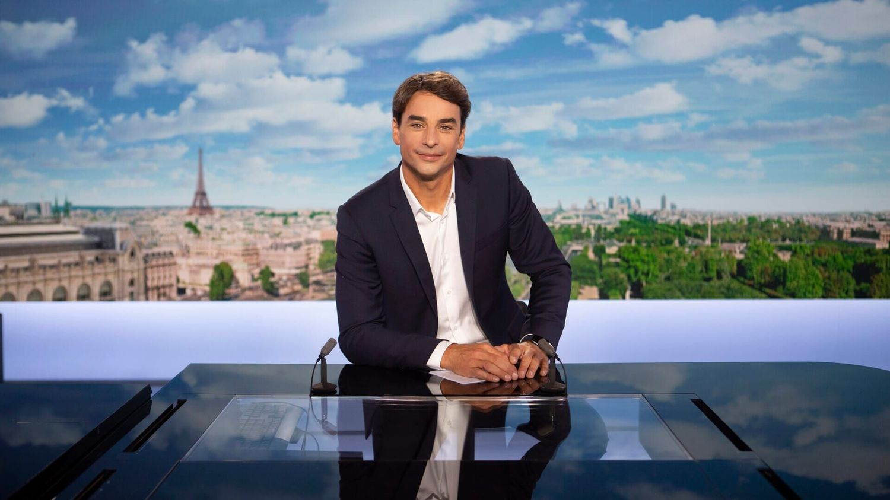
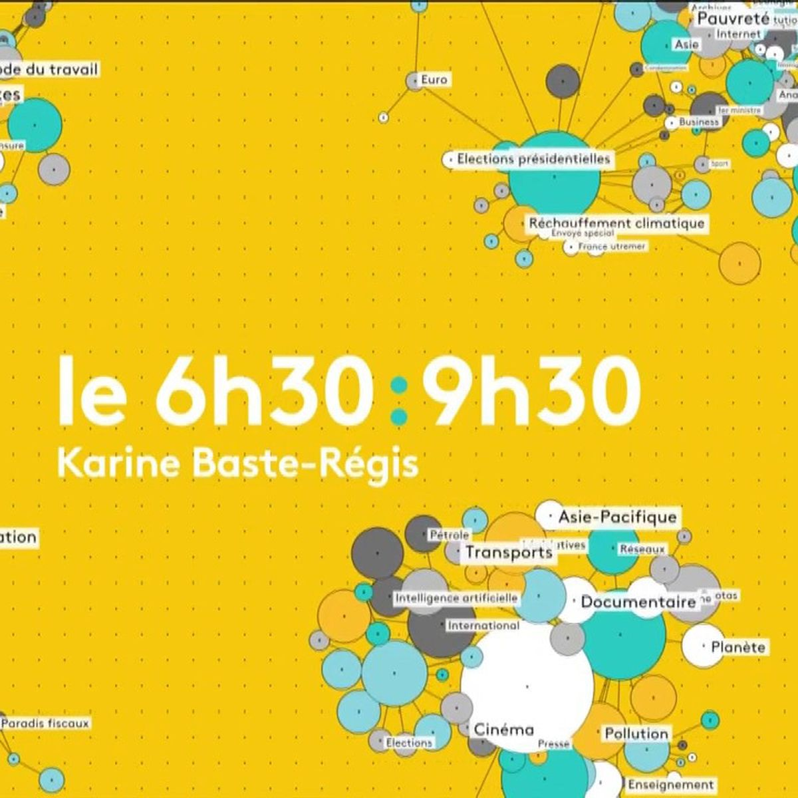
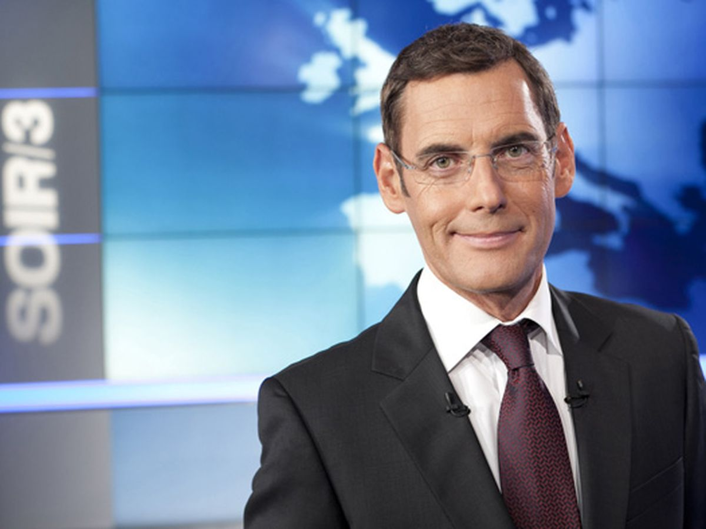
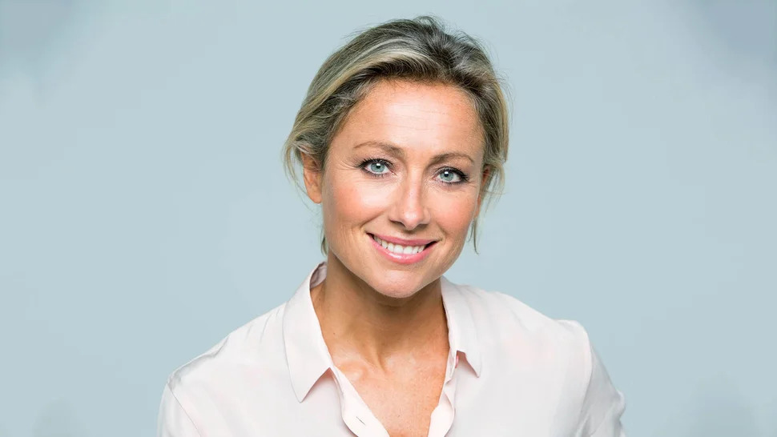

"Je vis sur la route, mais sans concert au bout" on a passé une journée avec Francis Lalanne, tête de liste "gilets jaunes" aux européennes
"Je vis sur la route, mais sans concert au bout" on a passé une journée avec Francis Lalanne, tête de liste "gilets jaunes" aux européennes
ÉLECTIONS EUROPÉENNES 2019
"Je vis sur la route, mais sans concert au bout" on a passé une journée avec Francis Lalanne, tête de liste "gilets jaunes" aux européennes
 INFO FRANCEINFO. Européennes : les Républicains et le RN n'ont pas signé le plaidoyer de Transparency International pour la lutte contre la corruption
INFO FRANCEINFO. Européennes : les Républicains et le RN n'ont pas signé le plaidoyer de Transparency International pour la lutte contre la corruption
 Italie: Matteo Salvini affaibli pour les européennes
Italie: Matteo Salvini affaibli pour les européennes
 "Nous avons une capacité à nous adresser à des Français qui viennent d'horizons très différents", assure Nicolas Bay du Rassemblement national
"Nous avons une capacité à nous adresser à des Français qui viennent d'horizons très différents", assure Nicolas Bay du Rassemblement national
 80 km/h, PMA, chômage, européennes... Ce qu'il faut retenir de l'interview d'Édouard Philippe sur franceinfo
80 km/h, PMA, chômage, européennes... Ce qu'il faut retenir de l'interview d'Édouard Philippe sur franceinfo
LES JT

JT de 8h du vendredi 17 mai 2019
Le JT de 7h de franceinfo du vendredi 17 mai 2019
Grand Soir 3 du jeudi 16 mai 2019
JT de 20h du jeudi 16 mai 2019